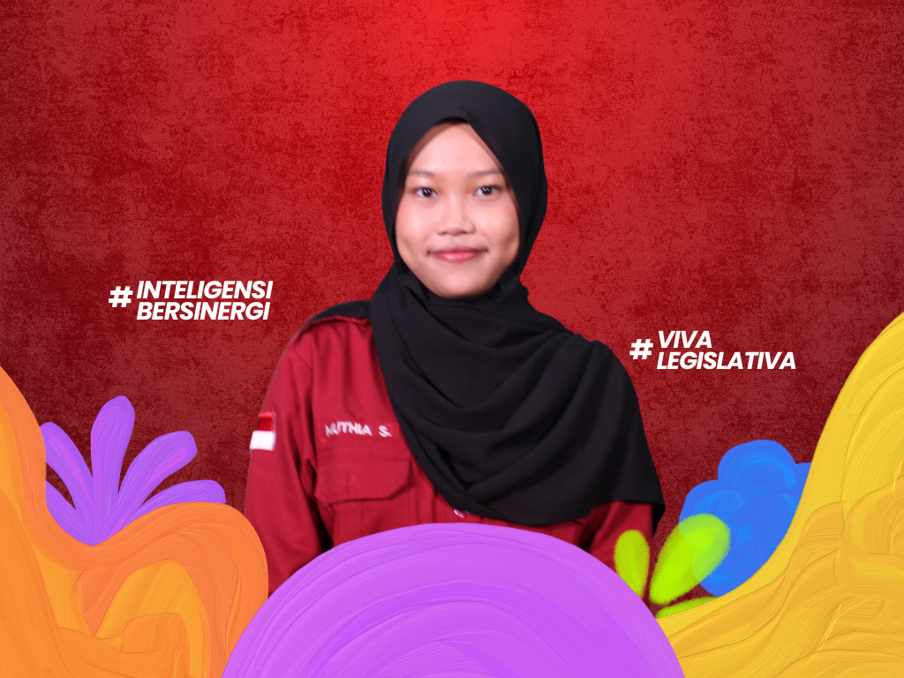
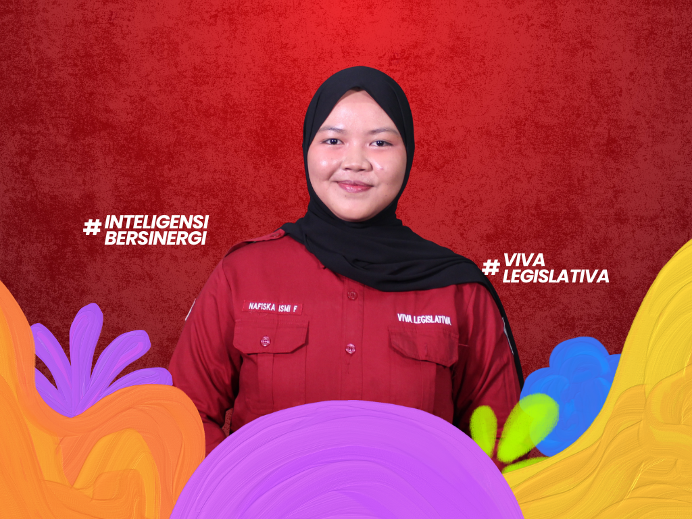
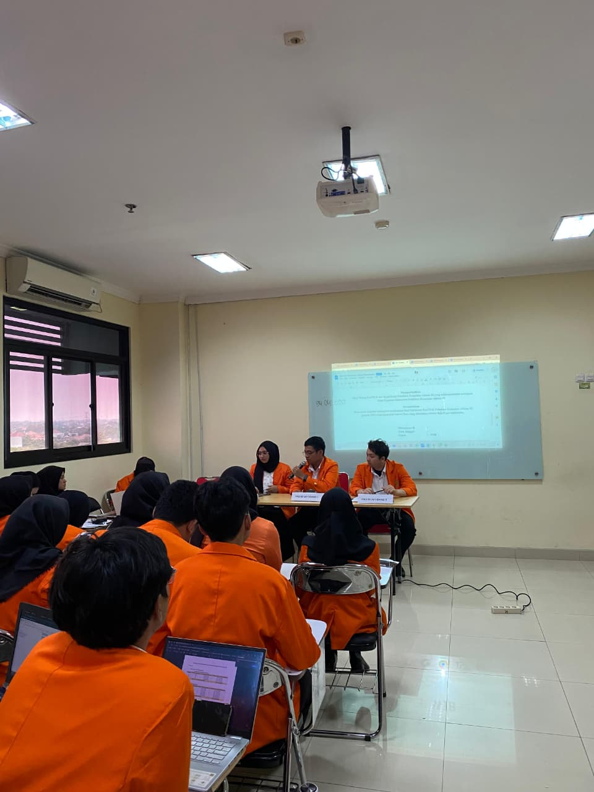
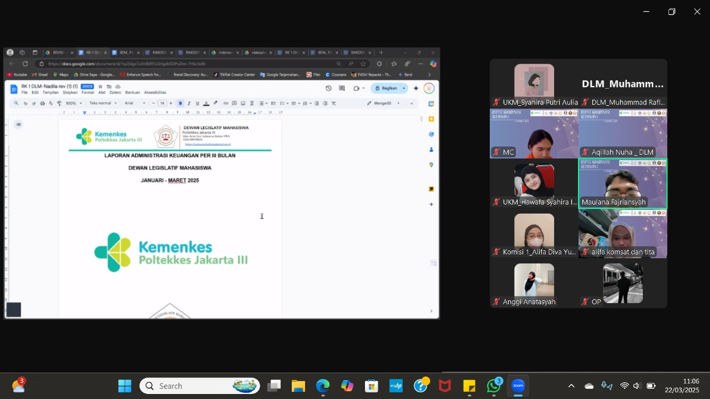
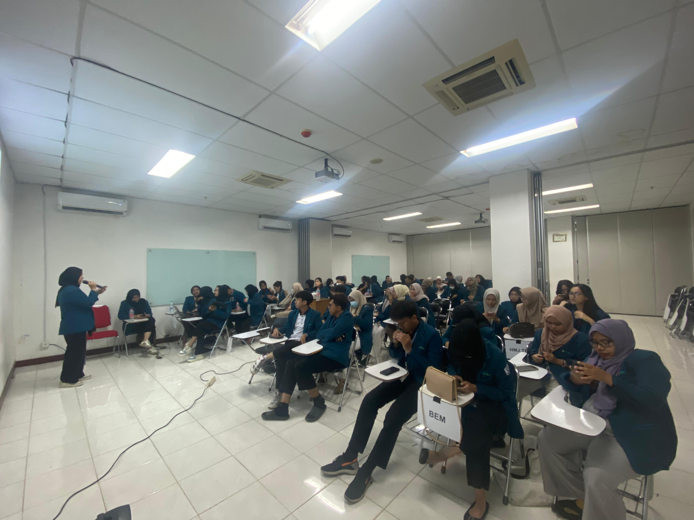
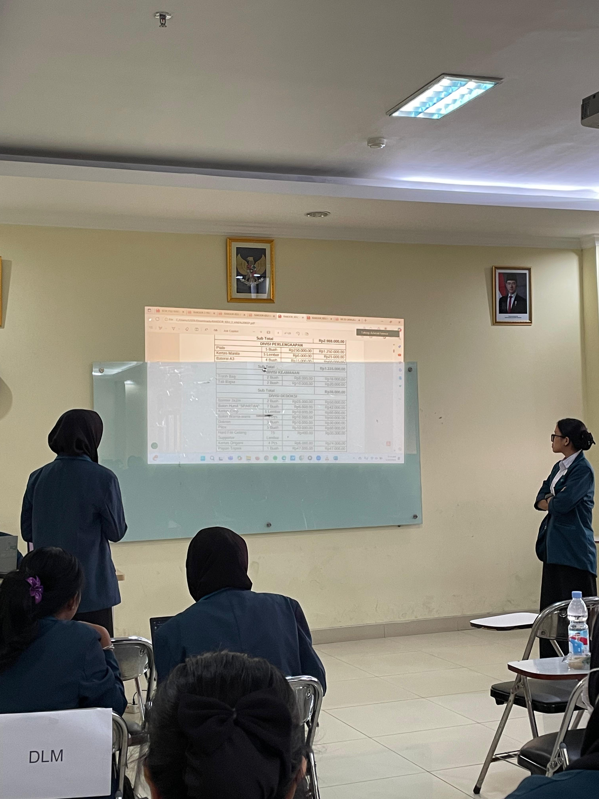
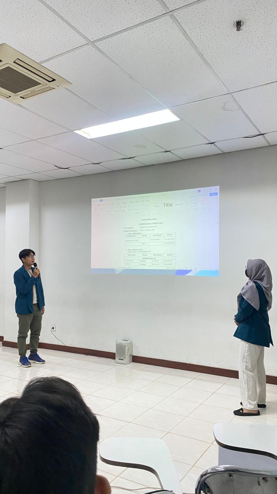

Komisi I Keuangan
Halo Mahasiswa Poltekkes Kemenkes Jakarta III!
Perkenalkan kami dari Komisi I Dewan Legislatif Mahasiswa Poltekkes Kemenkes Jakarta III Periode 2025. Yuk kenal kami lebih lanjut!

Muthia Fahrida
Koordinator Komisi I

Alifa Diva
Anggota Komisi I

Maula Fajriansyah
Anggota Komisi I

Muthia Salsabila
Anggota Komisi I

Nafiska Ismi
Anggota Komisi I

Alifa Ramadhani
Anggota Komisi I
Tugas Pokok Komisi I
-
Menyelenggarakan Rapat Rancangan Anggaran Pendapatan dan Belanja Lembaga Keorganisasian (RAPBLK).
-
Menyelenggarakan Rapat Kerja guna membahas anggaran dari program kerja organisasi-organisasi di LKM Poltekkes Kemenkes Jakarta III.
-
Menetapkan besaran dana mahasiswa dan persentase keuangan LKM Poltekkes Kemenkes Jakarta III sesuai kebutuhan masing-masing LKM Poltekkes Kemenkes Jakarta III yang telah disepakati bersama pada Rapat Rancangan Anggaran Pendapatan dan Belanja Lembaga Keorganisasian (RAPBLK).
-
Mengesahkan besaran dana mahasiswa dan presentase keuangan LKM pada Rapat Rancangan Anggaran Pendapatan dan Belanja Lembaga Keorganisasian (RAPBLK).
Program Kerja Komisi I
-
Rapat Dengar Rancangan Anggaran Pemasukan dan Belanja Lembaga Keorganisasian (RAPBLK)
Pembagian presentase dana mahasiswa untuk LKM serta menetapkan program kerja dari setiap LKM Poltekkes Kemenkes Jakarta III.

-
Rapat Kooordinasi Keuangan I
Mengevaluasi dan mengoordinasi pembagian dana mahasiswa kepada tiap LKM di 3 bulan pertama.

-
Rapat Kooordinasi Keuangan II
Mengevaluasi dan mengoordinasi pembagian dana mahasiswa kepada tiap LKM 3 bulan setelah Rapat Koordinasi Keuangan I.

-
Rapat Kooordinasi Keuangan III
Mengevaluasi dan mengoordinasi pembagian dana mahasiswa kepada tiap LKM 3 bulan setelah Rapat Koordinasi Keuangan II.

-
Rapat Kooordinasi Keuangan IV
Mengevaluasi dan mengoordinasi pembagian dana mahasiswa kepada tiap LKM 3 bulan setelah Rapat Koordinasi Keuangan III.
